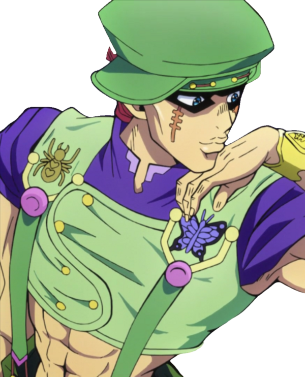
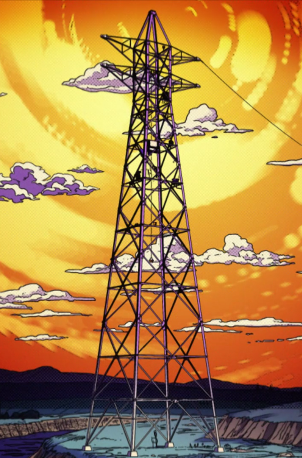
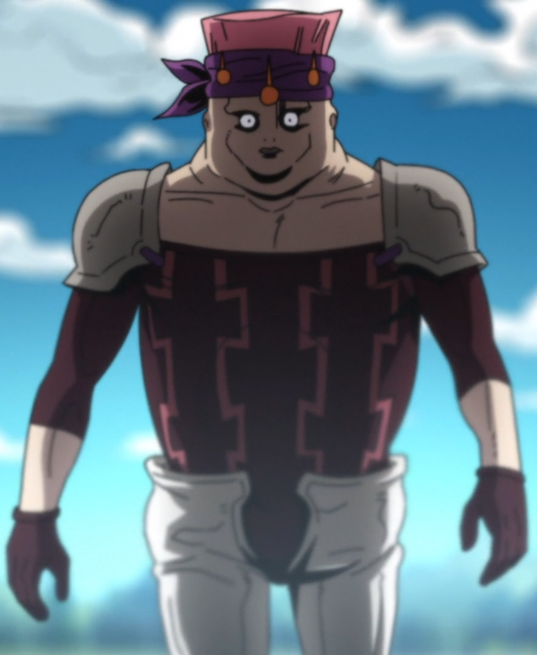
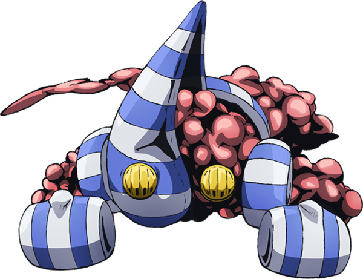
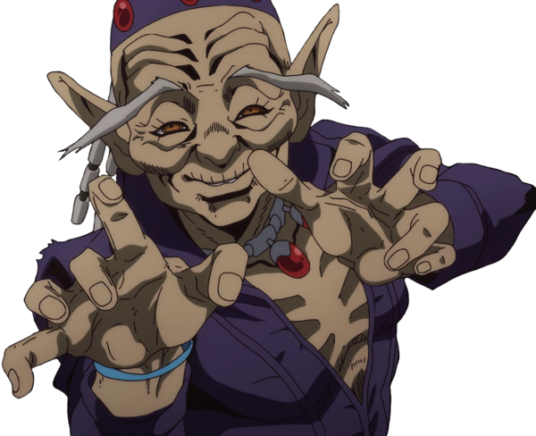
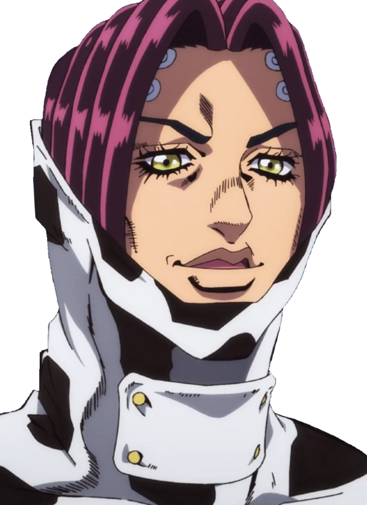

(SupāFurai)
Te maintient en forme
(Notōriasu Biggu)
TOUJOURS là pour toi
(Doragonzu Dorīmu)

Fait de bons massages
(Sukai Hai)

Est un secret bien gardé
| Numero | Nom du porteur | Porteur | Nom du stand | Visuel | Score combat | Score dans la vie | Informations diverses |
|---|---|---|---|---|---|---|---|
| 1 | Toyohiro Kanedaichi |  | Super Fly (SupāFurai) |
 | A | S | Permet de prendre l'air Te maintient en forme |
| 2 | Carne (Karune) |  | Notorious B.I.G (Notōriasu Biggu) |
 | S | D | Toujours là pour toi TOUJOURS là pour toi |
| 3 | Kenzou (Kenzō) |  | Dragon's dream (Doragonzu Dorīmu) |
|
D | B | Donne de bonne idées d'aménagement Fait de bons massages |
| 4 | Rikiel (Rikieru) |  | Sky High (Sukai Hai) |
|
B | B | Permet de se rafraichir Est un secret bien gardé |